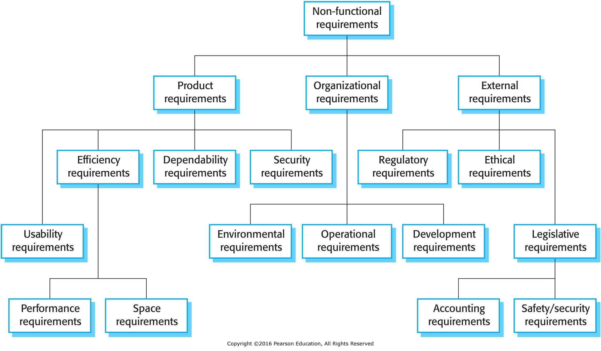

Requirements Sepecification
Reference:
From readings...
User Requirements
- High-level
- Abstract (relatively)
- Typically for non-technical stakeholders and initial planning
System Requirements (Functional Specifications)
- Detailed
- Measurable
- Formal language
Example:
NASA: Example of Functional and Performance Requirements
-
The TVC shall gimbal the engine a maximum of 9 degrees, ± 0.1 degree.
-
The TVC shall gimbal the engine at a maximum rate of 5 degrees/second ±
0.3 degrees/second.
- The TVC shall provide a force of 40,000 pounds, ± 500 pounds.
- The TVC shall have a frequency response of 20 Hz, ± 0.1 Hz.
Keywords
-
Often use keywords to specify constraints:
- shall: mandatory
- should: recommended
- may: optional
- will: facts or declarations
Natural Language: Simple, informal, and easy to
understand. Often used for initial requirements gathering. Must common way
to express requirements.
- "The system shall allow the user to log in."
-
"The system should display the user's name after login."
- "The system may display a welcome message after login."
Structured: More formalized, with a defined structure and
syntax. Often used for more detailed requirements or speficic domains.
Functional vs Non-Functional Requirements (vs Business Rules)
Functional Requirements
Describe what the system should do. Form the basis for use cases and test
cases.
-
"The system shall display a welcome message after login."
- "The system shall show a logout button after login."
Non-Functional Requirements

Avoid:
- "The system shall be fast."
- "The system shall be secure."
- "The system shall be reliable."
Prefer:
-
"The report shall be sent out prior to close of business, 5pm
EST."
-
"The email shall be sent no later than 24 hours after receiving a
the request."
- "The system shall be available 99.9% of the time."
-
"The system shall be able to handle 1000 concurrent users."
Business Rules
Not the same as requirements, but similar.
Reference:
Business rules are constraints on the business that may
or may not affect the system.
You may hear, "The company has a business rule that [...]".
-
"Transactions of over $10,000 must be audited by two persons."
-
"Invoice totals must appear on the front page of the invoice."